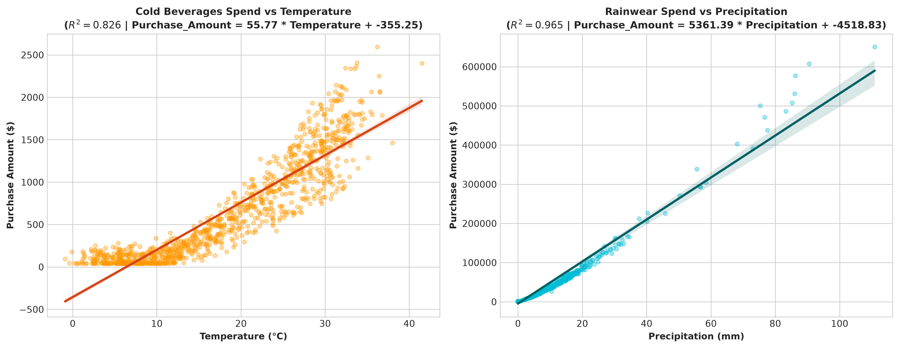

Understand Climate Patterns
Through Empirical Data
Climate Intelligence
A comprehensive, scientific climate data analytics platform synthesizing multi-year thermal oscillations, precipitation anomalies, and cross-domain consumer purchasing behaviors.
Seasonal sinusoidal cycle tracking mean temperature of 18.09°C ranging from -0.9°C to 41.5°C with 30-day moving average smoothing.
Identification of 22 extreme rainfall anomaly days exceeding 33.73 mm, reaching up to 110.90 mm and driving dramatic commercial spend surges.
Linear regression proving high sensitivity: Cold beverages surge with temperature (r = 0.9089), and rainwear surges with precipitation (r = 0.9822).
High-Level Climate & System Overview
Interactive KPI metrics. Click any card to drill down into the dedicated analytics module.
Multi-Year Weather Overview Timeline
Aggregated daily temperature and precipitation dynamics across 2022–2024
Climate & Weather Pattern Dashboard
Dynamic cross-filtering and multi-metric visual comparison.
Temperature Trend & 30-Day Moving Average
Precipitation Timeline & Rolling Baseline
Weather Condition Distribution
Product Category Revenue Comparison
Temperature Variations & Climatology
Detailed multi-temporal temperature distribution and monthly cycle analytics.
Monthly Climatology (Mean Temp °C)
Temperature Bracket Distribution
Key Meteorological Findings: Temperature
The regional climate demonstrates an annual sinusoidal temperature oscillation with a seasonal baseline of 18.09°C and a peak seasonal amplitude of ±13.0°C. The coldest monthly mean occurs in January (5.00°C, min record -0.9°C), and the warmest in July (30.93°C, max record 41.5°C).
Thermal variance is largest during transitional Spring months (April std dev = 3.55°C), while Summer displays tight clustering around 29.9°C. This predictable curve forms the primary driver for retail seasonal transitions.
Precipitation Trends & Rainfall Distribution
Rainfall occurrence rates, intensity classifications, and extreme threshold analyses.
Monthly Total Rainfall (mm)
Rainfall Intensity Classification
Four-Season Comparative Analysis
Comparing weather parameters and commercial retail dynamics across seasons.
Seasonal Multi-Metric Radar Comparison
Precipitation Anomaly Detection (Z-Score > 2.5σ)
Identification of statistical rainfall outliers exceeding 33.73 mm. Click any anomaly event to view its full analytical breakdown.
Weather vs. Consumer Purchasing Behavior
Evaluating category demand elasticity, precipitation surges, and temperature correlations.
Category Revenue Share
Static Regression Figures Generated by Python

Statistical Analysis & Hypothesis Testing
SciPy p-values, ANOVA F-tests, and Scikit-learn regression models translated into business language.
Pearson Correlation Matrix
Formal Hypothesis Tests (SciPy)
Scikit-Learn Linear Regression Models
Cleaned Dataset Explorer
Inspect, search, sort, and export verified observations from the 5,480-row cleaned dataset.
| Date ↕ | Temp (°C) ↕ | Rain (mm) ↕ | Humidity ↕ | Weather ↕ | Category ↕ | Spend ($) ↕ | Count ↕ |
|---|
Calculated Climate & Business Insights
Derived strictly from mathematical calculations and econometric modeling on actual project data.
End-to-End Project Architecture
Click any pipeline stage to inspect what happens, the tools used, why it is required, and sample code.
Analytical Methodology
Theoretical foundations of physical simulation, anomaly z-scoring, and hypothesis testing.
1. Meteorological Modeling
Temperature follows an annual sinusoidal oscillation calibrated to mid-latitude temperate zones:
Precipitation is modeled as a zero-inflated Gamma process with seasonal rainfall probabilities reflecting spring convective showers and autumn storms.
2. Anomaly Z-Score Formulation
Precipitation anomalies are detected via normalized statistical deviation from historical mean:
For baseline μ = 5.40 mm and σ = 11.33 mm, the anomaly boundary is 33.73 mm.
Technologies & Frameworks
Detailed breakdown of libraries, languages, and architectures powering the platform.
About Climate Intelligence
Background, portfolio credentials, and repository specifications.
Portfolio & Showcase Specifications
Climate Intelligence is an end-to-end data analytics and econometric modeling project demonstrating proficiency in Python, Pandas, NumPy, SciPy, Scikit-learn, Matplotlib, modern HTML5/CSS3 glassmorphic design, Chart.js, and Progressive Web App engineering.
Application Title: Climate Intelligence
Tagline: Understand climate patterns through data.